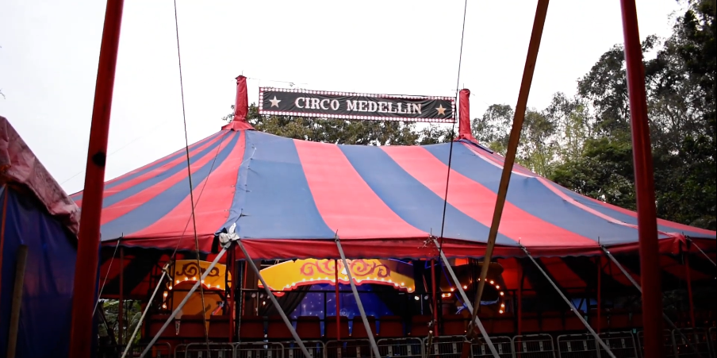
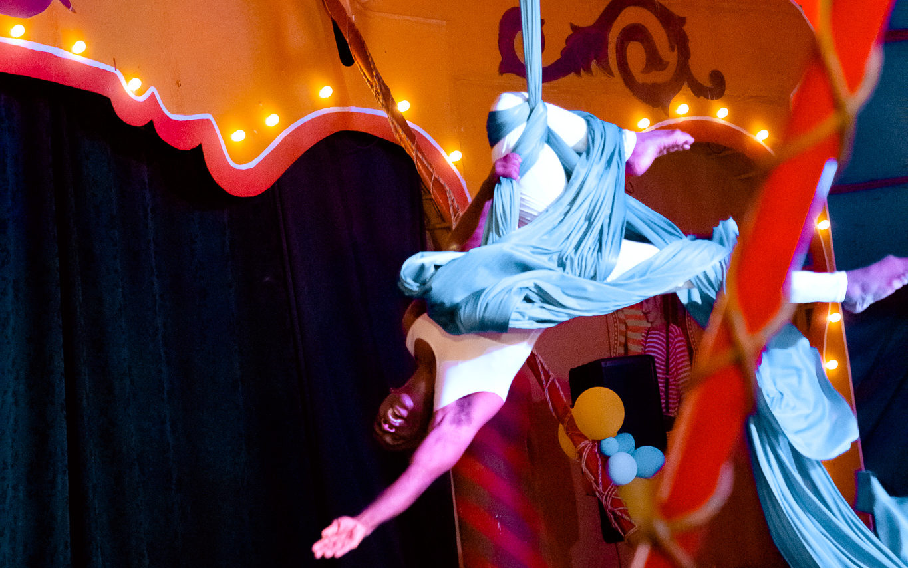

Inicio |
Fotos |
Vídeos
El Circo de Medellín: Más allá de las lonas y los payasos
Galería de fotos
Aquí te dejamos algunas fotografías que ilustran la
mágia✨
del circo.
Carpa principal

Museo del circo
Elementos del museo
Zona común
Esculturas circenses
Esculturas circenses
Carpa del circo
Mago del circo: Naúl
Cristina López bailarina y trapecista
Cristina López bailarina y trapecista
Cristina López bailarina y trapecista
Foto tomada de: Casacol

Isel, La Reina de los ula-ula
Isel, La Reina de los ula-ula